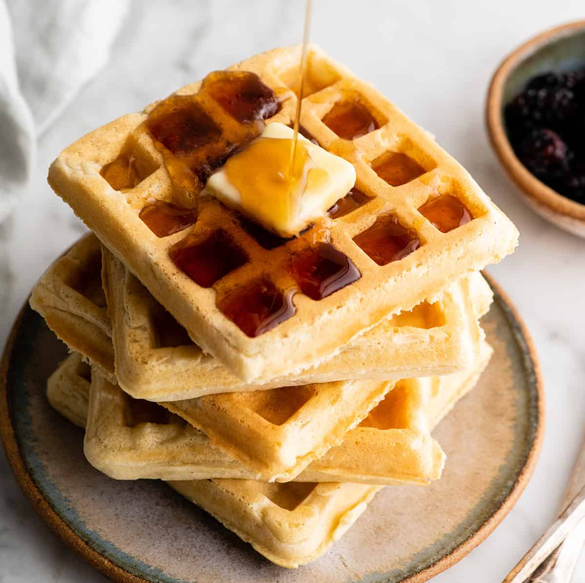

Waffles

Description
Who doesn't love a nice fluffy waffle? All you really need is a waffle iron
and a few basic ingredients and that fluffy waffle can be yours.
Ingredients
- 2 eggs
- 2 cups flour
- 1 3/4 cups milk
- 1/2 cup vegetable oil
- 1 tablespoon sugar
- 4 teaspoons baking powder
- 1/4 teaspoon salt
- 1/5 teaspoon vanilla extract
- cooking spray
Steps
- Preheat your waffle iron
- Whisk together the milk, eggs, flour, and vegetable oil
- Next whisk in the sugar, baking powder, salt, and vanilla until smooth
- Spray the waffle iron with cooking spray then add batter. Cook until golden brown